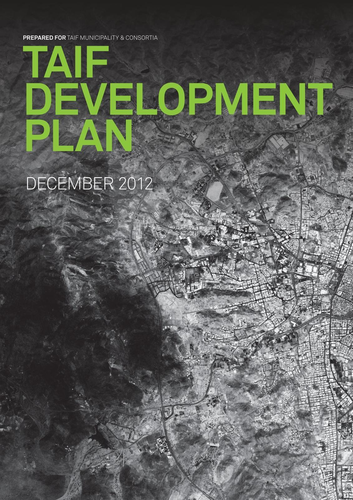
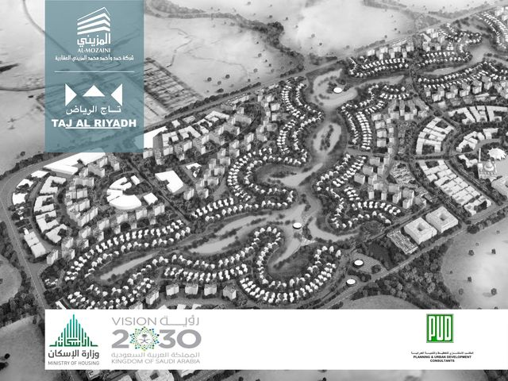
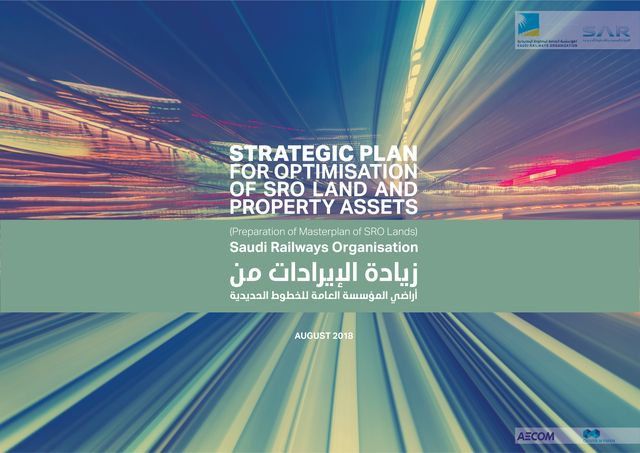

Taif Development Plan (TDP)
Master plan · Taif, Saudi Arabia
Development plan in Taif for Taif Municipality and Consortia, with AECOM.
Taif: Located at an elevation of 1,879 m (6,165 ft) in the slopes of the Hijaz Mountains, which themselves are part of the Sarat Mountains, the city has a population of 563,282 people in 2022, making it one of the most populous cities in the kingdom. Source
More from Taif
 Jabal Thabeer Park (Mina, Makkah)Mina, Makkah · 20252024Kidana Al Khaif (Mina, Muzdalifah and Arafat)Makkah (Mina, Muzdalifah, Arafat) · 2024-20262022AlUla Strategic Framework PlanAlUla · 2022
Jabal Thabeer Park (Mina, Makkah)Mina, Makkah · 20252024Kidana Al Khaif (Mina, Muzdalifah and Arafat)Makkah (Mina, Muzdalifah, Arafat) · 2024-20262022AlUla Strategic Framework PlanAlUla · 2022
Taj Al RiyadhRiyadh · 2018-2019 Al Jawhara ResidenceJeddah · 2017-2018
Al Jawhara ResidenceJeddah · 2017-2018
Strategic Plan for the Optimisation of Saudi Railway Organization's Land and Property AssetsSaudi Arabia · 2017-2018